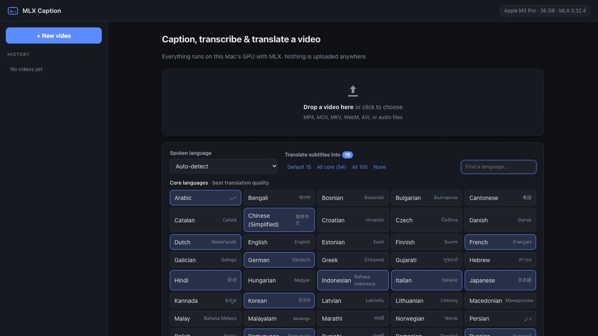

How to add subtitles to a video on your Mac, offline, in 100 languages
- The short answer: on an Apple silicon Mac you can transcribe the speech, translate the subtitles and export SRT and VTT files without uploading anything.
- What you need: an M1 or newer Mac with macOS 14 Sonoma or newer, and 8 to 15 GB free for AI models you download once.
- Then: upload the
.srtfile to YouTube Studio, or import it into Premiere Pro, Final Cut Pro or DaVinci Resolve.
Most subtitle tools upload your video to a server and charge by the minute. If you have an Apple silicon Mac, you can do the whole job on your own machine instead: transcribe the speech, split it into readable subtitles, translate them, and export files that YouTube and every major editor accept.
This guide walks through that process with MLX Caption, a Mac app I built for exactly this job. The first five videos are free, so you can follow along without paying. Near the end I also explain what happens under the hood, for anyone curious about running AI models locally.
Why add subtitles to a video offline?
- Privacy. Client footage, unreleased videos and internal recordings never leave your Mac.
- Cost. Online services usually charge per minute of video, and translation into extra languages costs more again. A local tool costs the same whether you caption one video or a thousand.
- No waiting on uploads. Large video files don't need to travel anywhere.
What you need
| Mac | Apple silicon: M1, M2, M3, M4 or newer. Intel Macs can't run it. |
|---|---|
| macOS | 14 Sonoma or newer |
| Memory | 16 GB recommended. 8 GB works with smaller models, chosen automatically. |
| Disk | 8 to 15 GB free for the AI models, downloaded once |
| Video | MP4, MOV, MKV, WebM, AVI, or an audio file |
Step 1: Download and open the app
Download the free trial from the MLX Caption page and unzip it. No account, email address or card is needed.
Because the app is sold outside the Mac App Store, macOS asks you to confirm the first time you open it. Open System Settings → Privacy & Security, scroll down and click Open Anyway. You only do this once, and the download includes a short guide with the exact steps. Apple explains this check in Safely open apps on your Mac.
Step 2: Let it download the models
On first launch the app installs its components and downloads the AI models: about 6.5 GB on Macs with 8 to 16 GB of memory, and about 13 GB on Macs with 24 GB or more. This is the only step that needs the internet. After that, everything works offline.
Step 3: Drop in a video and choose languages

Drag your video onto the window. The spoken language is detected automatically. Then pick the subtitle languages you want. Fifteen common languages are selected by default, and there are buttons for "All core" (54 languages) and "All 100".
If your video has names or jargon the speech model might mishear, add them as a vocabulary hint. Then press start.
Step 4: Check the result

When it finishes you can play the video with any subtitle language, read the transcript, and compare a translation side by side with the original. It is worth a quick read before you publish, especially for names and for the less common languages.
For a sense of speed: on an M3 Pro, a 28-second clip was transcribed in 5.2 seconds. Translating that same clip into all 100 languages, plus scene descriptions and a summary, took 6 minutes 35 seconds. Older Macs and 8 GB machines are slower.
Step 5: Export and use the subtitles
Each job produces a folder with:
- SRT and VTT files for every language, the formats every platform and editor understands
- An MP4 with every language embedded as a selectable subtitle track, without re-encoding the video
- Optionally, a copy with one language burned in, for social media where viewers don't turn captions on
- A plain-text transcript, plus a summary with chapter timestamps you can paste into a video description
YouTube
In YouTube Studio, open Subtitles, choose your video, click Add language, then Add under Subtitles and choose Upload file → With timing. Select the matching .srt file. Repeat for each language. Viewers in other countries can then pick their own language. YouTube's own help page, Add subtitles & captions, has the full steps.
Premiere Pro
Import the .srt file into your project like any other media, then drag it onto the timeline. It becomes a caption track you can restyle.
Final Cut Pro
Choose File → Import → Captions and pick the .srt file. Recent versions of Final Cut Pro import SRT directly.
DaVinci Resolve
Import the .srt file into the Media Pool, then drag it onto the timeline to create a subtitle track.
What happens under the hood
Everything runs on the Mac's GPU through MLX, Apple's machine learning framework for Apple silicon. Four models do the work, one at a time so memory stays manageable:
| Job | Model |
|---|---|
| Speech to text | Whisper large-v3 turbo, with timing for every word |
| Translation and summary | Gemma 3 12B, 4-bit |
| Scene descriptions | Qwen3-VL, one keyframe per shot |
| Silence and shot detection | Small custom routines written directly in MLX |
The interesting trick is in translation. Generating text on a GPU is limited by memory bandwidth, not by raw compute, so translating into 16 languages in one batch costs little more than translating into one. The app reads the shared part of each prompt once, then decodes all the target languages together. That is why adding languages is cheap.
Two smaller details make the output usable. Silent stretches are skipped, because speech models tend to invent text in silence. And every translated line is checked for letters from the wrong writing system, for example Hindi script inside Urdu, and translated again if needed.
Limits worth knowing
- 54 "core" languages translate at high quality. The other 46 are lower-resource languages where quality varies, so review them before publishing.
- It needs an Apple silicon Mac. There is no Windows or Intel version.
- Machine translation is a strong first draft, not a certified translation. For legal or medical content, have a native speaker check it.
FAQ
How do you add subtitles to a video on a Mac?
Transcribe the speech, split it into readable subtitles, translate them if you need other languages, and export SRT or VTT files. On an Apple silicon Mac all of this can run on your own machine, with nothing uploaded.
How do I add subtitles to a video on YouTube?
In YouTube Studio, open Subtitles, choose your video and click Add language. Then click Add under Subtitles, choose Upload file → With timing and select the matching .srt file. Repeat for each language.
Can I add subtitles to a video permanently?
Yes. Make a copy of the video with one language burned in. This suits social media, where viewers don't turn captions on.
How do I add SRT subtitles in Final Cut Pro, Premiere Pro or DaVinci Resolve?
In Final Cut Pro, choose File → Import → Captions. In Premiere Pro, import the .srt file like any media and drag it onto the timeline. In DaVinci Resolve, import it into the Media Pool and drag it onto the timeline.
Disclosure: I am the developer of MLX Caption. After the five free videos it costs $49 once, with a 14-day refund. There is no subscription.
Try it on your own video
Your first 5 videos are free, with every feature. Nothing is uploaded.
Download the free trial ↗Questions, or need something built? Email me at hello@tabishapps.com. I am Tabish Hassan, a software developer in Pakistan, and I build websites, apps and business systems.